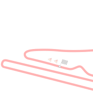

HISTORY
the formula one series originated with the european championship of grand prix motor racing of the 1920s and 1930s. the formula consists of a set of rules that all participants' cars must meet. formula one was a new formula agreed upon during 1946 with the first non-championship races taking place that year. the first formula 1 race was the 1946 turin grand prix.
a number of grand prix racing organisations had laid out rules for a world championship before world war II, but due to the suspension of racing during the conflict, the world drivers'championship did not become formalised until 1947. the first world championship race took place at silverstone in the united kingdom in 1950.
HISTORY
a major rule shake-up in 2014 saw the 2.4-litre naturally-aspirated v8 engines replaced by 1.6-litre turbocharged hybrid power units. this prompted honda to return to the sport in 2015 as the championship's fourth engine manufacturer. mercedes emerged as the dominant force after the rule shake-up, with lewis hamilton winning the championship closely followed by his main rival and teammate, nico rosberg, with the team winning 16 out of the 19 races that season. in 2015, ferrari was the only challenger to mercedes, with vettel taking victory in the three grands prix mercedes did not win.
the covid-19 pandemic forced the sport to adapt to budgetary and logistical limitations. a significant overhaul of the technical regulations intended to be introduced in the 2021 season was pushed back to 2022,] with constructors instead using their 2020 chassis for two seasons and a token system limiting which parts could be modified was introduced. the start of the 2020 season was delayed by several months, and both it and 2021 seasons were subject to several postponements, cancellations and rescheduling of races due to the shifting restrictions on international travel. many races took place behind closed doors and with only essential personnel present to maintain social distancing.
| Constructor | Number of championship titles |
|---|---|
| Ferrari | 16 titles |
| Williams | 9 titles |
| McLaren | 8 titles |
| Mercedes | 8 titles |
| Lotus | 7 titles |
| Red Bull | 4 titles |
| Renault | 2 titles |
| Cooper | 2 titles |
| Brabham | 2 titles |
| Vanwall | 1 title |
| BRM | 1 title |
| Matra | 1 title |
| Tyrrell | 1 title |
| Benetton | 1 title |
| Brawn GP | 1 title |